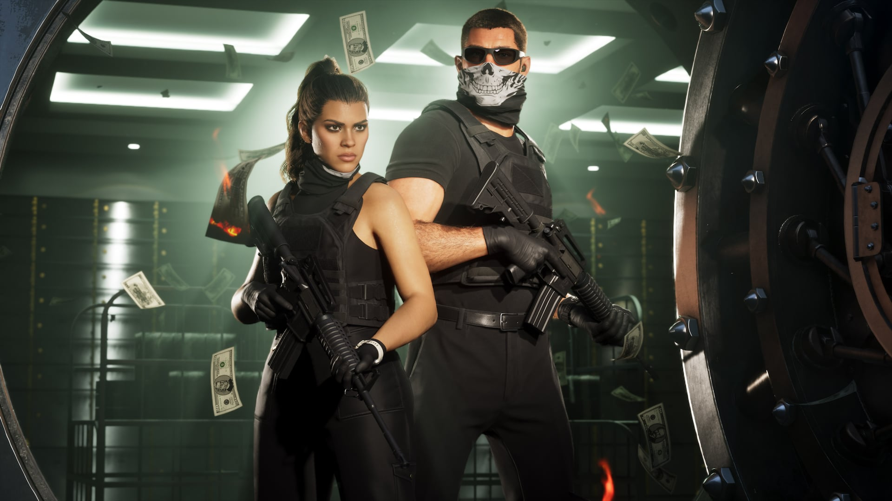

© Rockstar Games / Take-Two Interactive
Extended Look : 26 minutes de gameplay dévoilées
Le 27 août 2026, Rockstar Games a diffusé « Grand Theft Auto VI : An Extended Look », une présentation d'environ 26 minutes. Elle a été projetée en avant-première sur Netflix à 15h (heure de l'Est), avant d'être mise en accès libre sur YouTube et le site officiel de GTA VI à 21h le même jour.
C'est le premier vrai aperçu de gameplay non filtré en temps réel : vols de véhicules, poursuites policières, braquages, changement de personnage entre Jason et Lucia en pleine action, interactions avec des PNJ, activités annexes (plongée, jet-ski, courses de dirt bike, base jump) et scènes de vie quotidienne à Leonida.
Plusieurs récapitulatifs de presse avancent une carte environ trois fois plus grande que celle de Red Dead Redemption 2. Ce chiffre n'est pas confirmé par Rockstar et diverge de celui donné ensuite par Game Informer (« deux fois plus grande que GTA V », voir notre article) — à prendre avec prudence.
Côté combat, le système d'armes évolue : les joueurs peuvent désormais basculer instantanément entre deux armes déjà équipées sans passer par la molette, comme le montre Lucia en passant d'un fusil de précision à son pistolet en pleine fusillade. Le ramassage d'armes au sol ou sur des ennemis a également été simplifié.
Plusieurs nouveaux personnages secondaires apparaissent dans la vidéo, dont Raymond et Ernesto (« Nesto ») — voir leurs fiches dans la section Personnages.